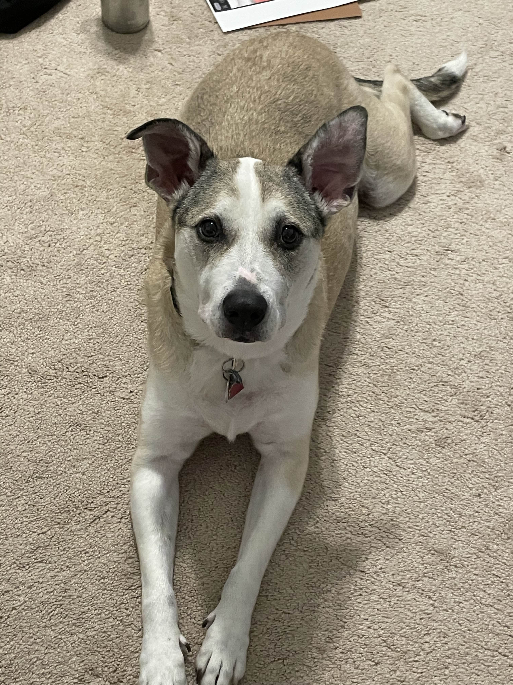
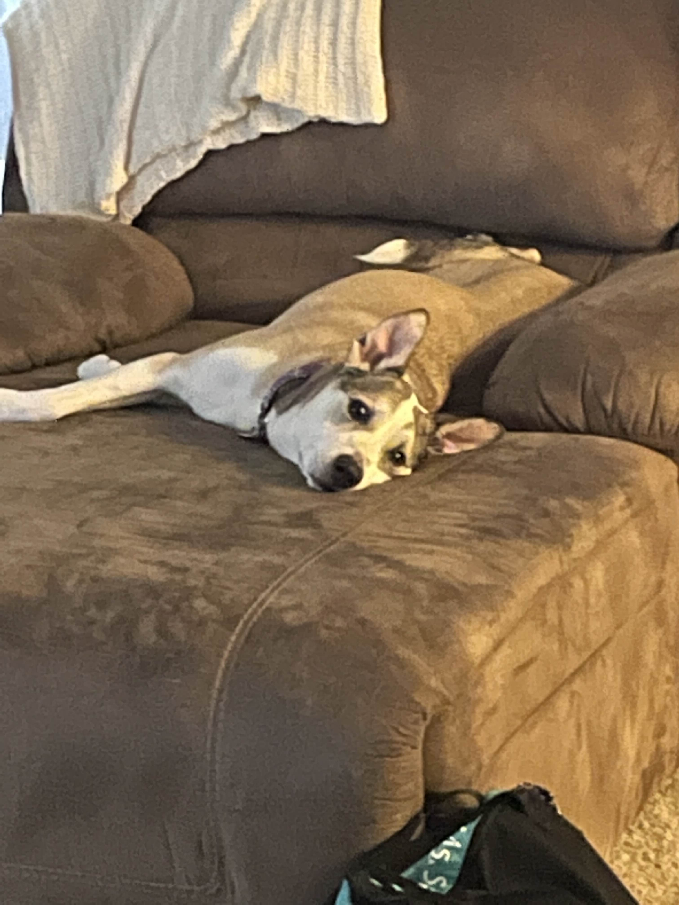

Tinkerbell, in contrast to the three cats, is our only dog. She has a very abrasive personality if she doesnt know you, which for many people can be scary or intimidating. However, when she gets to know you, she reveals that she is really just a big lover! She is 11 years old and as lively as ever.Since Tinkerbell as a name is quite the mouthful, we often times will just call her Tink. She usually doesn't pay much mind to the cats. That being said, if the cats are apparently not getting along, she is the first one to run over and break them up. She has the most vibrant personality I've ever seen in a dog (of course I may be baised a little...), and she will forever just be a puppy at heart.
| LIKES | DISLIKES | TEMPERMENT |
|
|
|